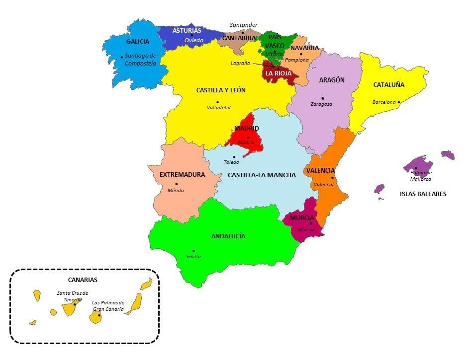

Asma
| Comunidad | 2019 | 2020 | 2021 | 2022 |
|---|---|---|---|---|
| Madrid | 12,000 | 11,500 | 13,000 | 14,000 |
| Cataluña | 10,500 | 10,000 | 11,200 | 12,000 |
| Andalucía | 8,000 | 8,500 | 9,000 | 9,500 |
| Comunidad Valenciana | 6,000 | 6,500 | 7,000 | 7,500 |
| Galicia | 5,000 | 5,200 | 5,500 | 6,000 |
Descripción
El asma es una enfermedad crónica de las vías respiratorias que se caracteriza por la inflamación y estrechamiento de las vías aéreas, lo que dificulta la respiración. Esta condición puede variar en intensidad y puede llevar a episodios de dificultad respiratoria, tos, sibilancias (silbidos al respirar) y opresión en el pecho.
El asma puede afectar a personas de todas las edades y, aunque no tiene cura, puede ser controlado con el tratamiento adecuado.
Causas
El asma es una enfermedad multifactorial, y sus causas pueden incluir:
- Genética: La predisposición genética puede aumentar el riesgo de desarrollar asma. Si uno o ambos padres tienen asma, es más probable que sus hijos también lo desarrollen.
- Alergias: Las reacciones alérgicas a sustancias como polen, ácaros del polvo, moho, caspa de animales o ciertos alimentos pueden desencadenar el asma.
- Contaminación Ambiental: La exposición a contaminantes del aire, humo de tabaco, vapores químicos o contaminación puede agravar el asma.
- Infecciones Respiratorias: Las infecciones virales, especialmente en la infancia, pueden aumentar el riesgo de desarrollar asma.
- Factores Ambientales: Cambios estacionales, clima frío, y exposición a irritantes como productos químicos domésticos o perfumes pueden desencadenar síntomas.
Síntomas
Los síntomas del asma pueden variar desde leves hasta graves e incluyen:
- Sibilancias: Son sonidos agudos o silbidos que se producen al respirar, especialmente al exhalar.
- Dificultad para Respirar: Sensación de falta de aire o dificultad para respirar profundamente.
- Cos Persistente: La tos puede empeorar durante la noche o con la actividad física.
- Opresión en el Pecho: Sensación de tensión o presión en el pecho.
- Sufrimiento Nocturno: Despertar debido a dificultad para respirar, tos o sibilancias.
Pruebas y exámenes
Para diagnosticar el asma, los médicos pueden realizar varias pruebas y exámenes, tales como:
- Pruebas de Alergia: Para identificar posibles alérgenos que pueden estar desencadenando los síntomas.
- Radiografías de Tórax: Para descartar otras condiciones pulmonares.
- Prueba de Función Pulmonar (Espirometría): Mide la cantidad y velocidad del aire que puedes exhalar, y ayuda a determinar el grado de obstrucción de las vías aéreas.
Tratamiento
El tratamiento del asma se centra en controlar los síntomas y prevenir ataques. Incluye:
- Medicamentos de Control:
- Corticosteroides Inhalados: Reducen la inflamación de las vías respiratorias (por ejemplo, fluticasona, budesonida).
- Broncodilatadores de Larga Acción: Ayudan a mantener las vías aéreas abiertas durante más tiempo (por ejemplo, salmeterol, formoterol).
- Medicamentos de Alivio Rápido:
- Broncodilatadores de Acción Corta: Proporcionan alivio rápido durante un ataque de asma (por ejemplo, salbutamol, terbutalina).

Expectativas
El asma es una enfermedad crónica que, aunque no tiene cura, puede ser efectivamente manejada con el tratamiento adecuado y una adecuada estrategia de control. La mayoría de las personas con asma pueden llevar una vida activa y saludable si siguen su plan de tratamiento y evitan los factores desencadenantes. La clave para una buena calidad de vida con asma es un manejo continuo y una colaboración estrecha con el equipo médico para ajustar el tratamiento y responder a los cambios en los síntomas.
Número de asmáticos por comunidad autónoma:
